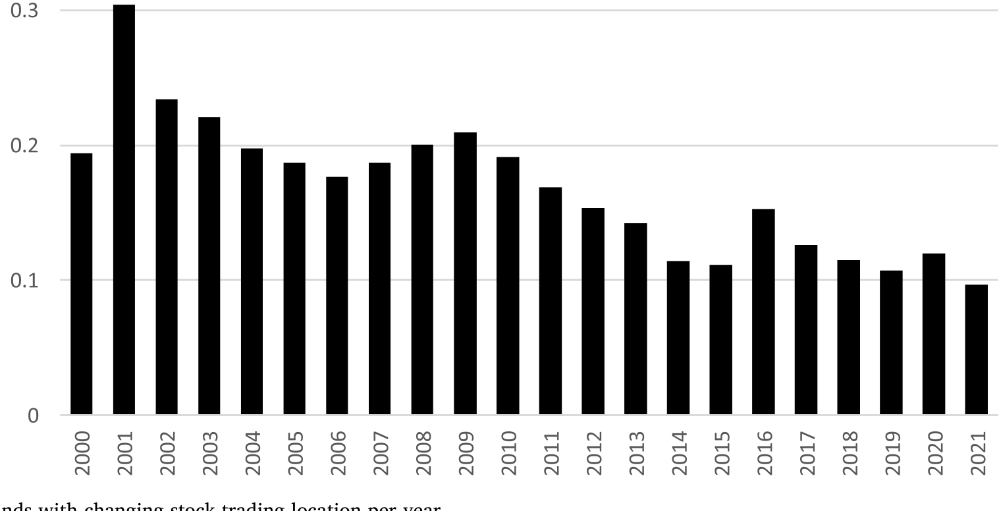
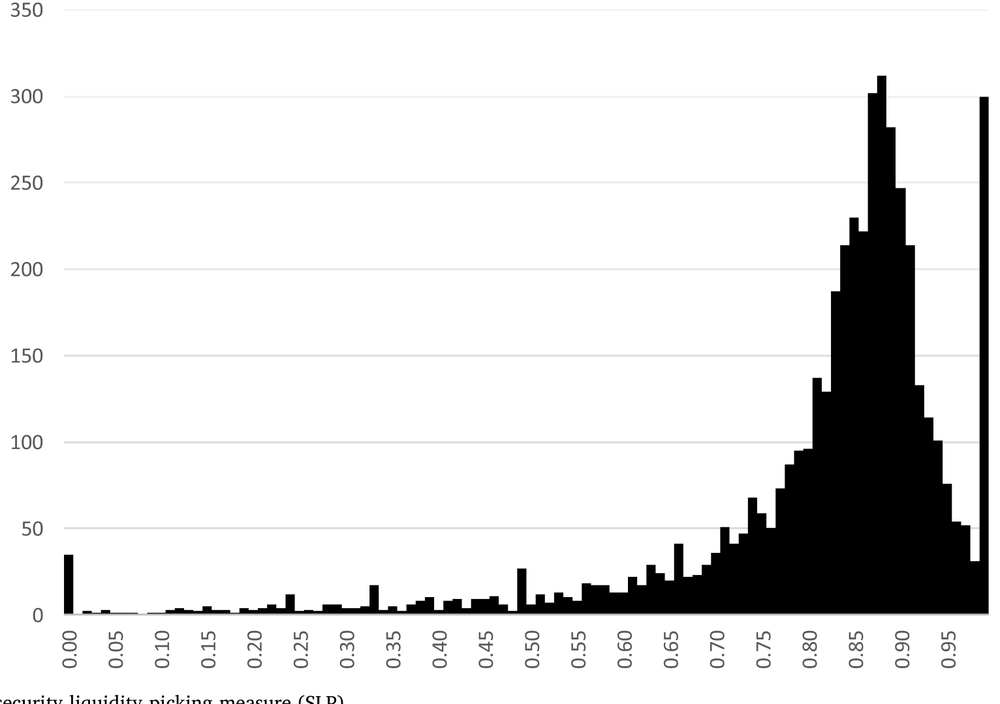
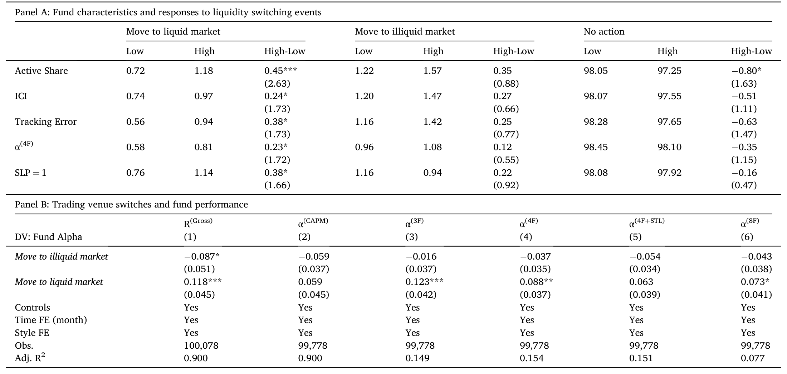
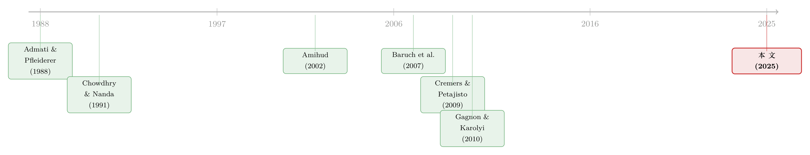

同一只股票，两个柜台：基金经理在哪儿下单，泄露了他的「本事」
本文读的是 Jiao, Sarkissian & Schumacher (2025, Journal of Financial Economics)：当一家公司的股票既能在本国市场买、又能通过 ADR 在美国买时，那些被传统指标判定为「有本事」的基金，会系统性地选择在更有流动性的那个柜台下单——而这种「挑流动性下单」的习惯，本身就预示着更高的基金业绩，且这种选股能力并不局限于跨境上市的那几只股票。
1 一个被忽略的选择题
先想象一个再普通不过的场景。
一家做全球配置的共同基金，看好某家欧洲公司，决定买它的股票。这时候，基金经理面前其实摆着两张几乎一模一样的「菜单」：一张是这家公司在它本土交易所挂牌的普通股，另一张是它在美国挂牌的美国存托凭证 (American Depositary Receipt, ADR)。
这两样东西有多像？像到几乎可以画等号。由无套利原则保证，跨境上市股票在两个市场的收益率近乎完全相关（Gagnon and Karolyi, 2010）——你今天在法兰克福买，还是在纽约买，赚到的钱几乎分毫不差。
于是一个看似无聊、却被以往文献几乎完全跳过的问题浮出水面：既然买哪边赚的钱一样，基金为什么还要在「买哪边」上费心思？如果它真的费了心思，那是为了什么？
这就是这篇论文的全部张力所在。它不问「基金买不买跨境股」，它问的是——在已经决定要买的前提下，基金到底选在哪个柜台成交。
2 为什么这个「无聊」的选择，其实是一面照妖镜
接着，一个自然的问题是：研究「在哪儿下单」到底有什么意思？
关键在于，跨境上市这个场景，几乎是为检验知情交易理论 (theories of informed trading) 量身定做的一块「干净实验台」。
我们知道，公司选择去美国上市，有一大堆好处：降低资本成本、提升知名度、便于增发、绑定更严格的信息披露……（关于跨境上市的诸多收益，文献汗牛充栋，从 Doidge, Karolyi and Stulz (2004) 的投资者保护，到 Lang, Lins and Miller (2003) 的信息环境改善。）但请注意——这些好处全都是公司层面的，它们能说服投资者去买这家公司的股票，却和投资者在哪个柜台成交毫无关系。
更妙的是，ADR 和它对应的本土股票，在几乎所有维度上都一样：同样的现金流、同样的收益率、同样的风险敞口。它们之间唯一实质性的差别，就是流动性 (liquidity)——两个市场的成交量不同，价格冲击就不同。
这就把识别问题清洗得异常干净。对比一下股票和期权：它们也算「相关证券」，但期权还有内嵌杠杆、还有完全不同的交易环境，混杂因素一大堆（顺带一提，关于知情交易者如何在期权和股票两个市场间游走，可参见《期权里藏着的，不是先知，而是一张借券账单》）。而 ADR 与正股的对比，几乎剔除了除流动性之外的一切。
所以，如果一只基金在两个等价的柜台之间，系统性地偏向更有流动性的那个，这个偏好就只能用一件事来解释：它想在「最厚」的市场里下单，好让自己的信息优势不被价格冲击吃掉。 这恰恰是 Admati and Pfleiderer (1988)、Chowdhry and Nanda (1991) 这一脉知情交易理论的核心预言——知情交易者会战略性地选择流动性最好的市场来交易，以最小的价格冲击兑现自己的信息。
这里有个常被混淆的点：基金赚钱不是因为「追逐流动性」本身（两边收益一样，追流动性赚不到额外收益）。而是反过来——有信息的基金更在乎在哪儿下单，因为只有在厚市场里，它才能不动声色地把信息变现。流动性偏好是「果」，知情是「因」。
3 怎么把「挑流动性下单」量化出来
然后，作者把这个抽象的假设，落成了一个可测量的指标。
他们构造了一个证券流动性挑选 (security liquidity picking, SLP) 测度。直觉很朴素：对基金组合里每一只跨境上市的股票，看它持有的「更有流动性的那一边」（正股或 ADR）占该股票总持仓的比例，再在所有跨境股上取平均。
形式上，对基金 \(i\) 在某一时点，
$$ SLP_i = \frac{1}{N_i}\sum_{j=1}^{N_i} \frac{\text{Holdings in the more liquid venue of stock } j}{\text{Total holdings (stock + ADR) of stock } j} $$
这里 \(N_i\) 是基金 \(i\) 持有的跨境股数量。SLP 介于 0 和 1 之间：\(SLP_i = 1\) 意味着这只基金把每一只跨境股全部放在了更有流动性的那个柜台——这是「完美挑选」（perfect SLP）。
那「哪边更有流动性」怎么定？作者用相对成交量来判定，并直接对接 Amihud (2002) 的流动性测度。这一步在本设定下尤其干净：既然正股和 ADR 的收益率几乎相同，那么两者 Amihud 非流动性的差异，几乎完全由各自成交量的差异驱动。换句话说，流动性排序在这里基本等价于成交量排序。
至于「哪个柜台更厚」会不会变？会的，而且作者刻意对此保持「不可知论」（agnostic）的态度——他们不关心为什么某个市场会成为更厚的那个、也不预设是哪个。这一点在后面的事件研究里会变成识别利器。
下面这张图先给个直观感受：跨境股的流动性高地并不是一成不变的，基金确实会跟着搬家。每一年，都有相当比例的全球基金把至少一只股票的交易地点在本土与美国之间挪动——从 2001 年的约 31% 到 2021 年的约 12%，比例相当可观。

Figure 1: Proportion of funds with changing stock trading location per year
而 SLP 本身的分布也告诉我们，「完美挑选」绝非少数：

Figure 2: Distribution of security liquidity picking measure (SLP)
4 三个预言，三步验证
作者把核心假设拆成三条可检验的预言，逐一验证。整篇论文的叙事骨架，就是这三步。
预言一：有本事的基金，会在跨境股最有流动性的柜台下单。
怎么界定「有本事」？用文献里已经被反复验证的技能指标：主动份额 (active share)（Cremers and Petajisto, 2009）、行业集中度指数 (industry concentration index, ICI)（Kacperczyk, Sialm and Zheng, 2005），等等。
结果很干净：拥有完美 SLP 的基金，在「最有本事」那一档（top quintile）里的占比最高，且对大多数技能指标而言，这个占比随技能单调上升，顶档是底档的两到三倍。多元回归在控制了一大堆基金特征之后依然成立——技能与流动性挑选稳定正相关。量级上，技能每提高 1.0%，一只基金「只在最有流动性柜台下单」的几率（odds）就上升 2.3% 到 4.3%。而且这个效应在美资和非美资基金里都差不多。
接着，一个自然的问题是：会不会基金挑的根本不是「流动性」，而是「熟悉」或「治理」？
这就是预言二：有本事的基金的柜台选择，不是由临近性或治理动机驱动的。
这是全文识别最较真的地方。作者把样本扩展到每只基金的每一笔跨境持仓，把柜台选择同时回归到相对流动性、地理/经济临近性、以及投资者保护等特征上。
诚实地说，这些「替代动机」确实有用：和以往文献一致，基金总体上更倾向于持有「更近」的那一边。流动性的效应，平均而言，量级和地理或经济临近性这些老牌测度相当。但真正关键的一步在于——一旦按技能分组，对有本事的基金来说，流动性变成了最重要的决定因素：流动性对柜台选择的影响，在技能型基金里比非技能型基金强出最多 50%。 而其他任何替代动机，都找不到这种「技能差异化」效应。换句话说，地理临近谁都吃，但「专挑流动性」是有本事的人的专属习惯。
预言三：有本事的基金，其超额业绩会溢出到跨境股之外。
如果 SLP 真的是技能的代理，那它不该只在跨境股那一小块组合上灵验。事实正是如此：完美 SLP（\(SLP=1\)）的基金，在非跨境股乃至外国股票的持仓上同样跑赢。这说明这些基金是「整体有本事」，而非只擅长倒腾跨境股；也排除了「结果只是地理本土偏好（home bias）」的解释。
5 业绩：到底值多少钱
那么，挑流动性下单，到底能换来多少真金白银？
单变量检验里，完美 SLP（\(SLP=1\)）的基金，比 \(SLP<1\) 的基金每年毛收益高出 85.2 个基点 (bps)，风险调整后视模型不同高出 40.8 到 82.8 bps。多元面板回归（用风险调整收益做被解释变量、加上控制变量）支持同样的结论。
最有意思的一点是：SLP 对业绩的正效应，在控制了已有的技能指标之后依然存活。 这意味着，流动性挑选携带了关于基金经理能力的、超出现有代理变量所能捕捉的增量信息。一整套稳健性检验——多个国际因子模型、美资/非美资子样本、扣费后净收益——都没能推翻它。在所有替代动机里，只有地理临近性在非美资基金中显示出一点点和高收益的正相关。
6 把识别推到极致：流动性高地「换位」时
但你可能还是不放心：会不会高 SLP 的基金，只是恰好买在了那些后来流动性变好的股票上？这是个截面内生性的隐忧。
于是反转出现——作者做了一组事件研究 (event study)，盯住那些跨境股的流动性最高的柜台发生切换的时刻：从本土换到美国，或者反过来。
他们识别出 283 次这样的切换，涉及 98 家跨境公司。坦白说，大多数切换里，两个市场的流动性本就旗鼓相当（所以排名才容易翻盘），信号并不强。但即便如此，仍有一小撮基金（2.0%）做出了主动决策：把持仓从如今变得不那么流动的那一边，部分或全部挪到如今更流动的那一边。这个比例，是「流动性高地没换位」的那些股票上同一统计量的三倍多。
而且，做出这种主动搬家的基金，在标准技能指标上更可能高于中位数；它们在第二年录得 59 到 123 bps 的正风险调整超额收益。这正是知情交易理论那条核心预言的直接落地：知情交易者会把证券挪到它最有流动性的柜台去交易，以最大化信息的兑现。

Table 9
7 文献脉络
把镜头拉远，这篇论文坐在两条研究线的交汇处。
第一条线是多市场交易的理论。Admati and Pfleiderer (1988) 的日内量价模型与 Chowdhry and Nanda (1991) 奠定了核心直觉：当同一证券能在多处交易时，知情者会向「最厚」的市场集中，因为那里价格冲击最小。Baruch, Karolyi and Lemmon (2007) 把这套逻辑推进到跨境上市的实证，指出成交量在两个市场间的分布有巨大的异质性与动态性；Halling et al. (2008) 进一步追问「市场到底在哪儿」。Amihud (2002) 则提供了把成交量翻译成流动性的标准工具。
第二条线是国际共同基金的投资行为与「技能」度量。一边是临近性偏好的传统：Sarkissian and Schill (2004) 的临近性偏好、Coval and Moskowitz (1999) 的地理、Kang and Stulz (1997) 的经济、Grinblatt and Keloharju (2001) 的文化；另一边是技能度量工具的成熟：Cremers and Petajisto (2009) 的主动份额、Kacperczyk, Sialm and Zheng (2005) 的行业集中度。

以往这两条线基本是平行的：理论那条多停留在市场层面的聚合检验（比如把股票市场与其衍生品市场联系起来，如 Easley, O'Hara and Srinivas (1998)、Augustin et al. (2019)），鲜有人把「基于流动性的战略性柜台选择」直接连到投资者层面的业绩。这篇论文做的，正是把两条线拧在一起——用 ADR 这块干净的实验台，把知情交易理论的核心预言，第一次落到了基金组合这个微观层面上检验。
8 评论与延伸（Q&A + 研究方向）
(a) 几个可能的疑问
Q：两个市场收益几乎一样，那基金挑流动性到底是怎么赚到钱的？
关键要把因果方向看对。挑流动性本身不直接产生超额收益（两边等价）。SLP 是一个揭示变量：愿意、且有能力把每笔跨境交易都安排在最厚市场的基金，往往是真有信息的基金；它们的超额收益来自整体的选股能力，而 SLP 只是把这种能力「暴露」了出来。证据就是 SLP 的正效应会溢出到非跨境股。
Q：会不会高 SLP 只是「省了交易成本」，谈不上什么技能？
作者专门用基于持仓的收益 (holdings-based returns) 来排除这一点。持仓收益剔除了实际交易成本的影响，可如果 SLP 纯粹是省成本，它就不该和持仓收益相关。结果显示 SLP 与选股能力相关（而非择时能力），说明它捕捉的是信息，而不只是省钱。
Q：相对流动性的效应，和地理/经济临近性「量级相当」，那凭什么说流动性更重要？
在全样本里确实相当。但分组后才见真章：只有在有本事的基金里，流动性才跃升为最重要的决定因素（强出最多 50%），而临近性没有这种技能差异化。所以论文的主张不是「流动性总体最强」，而是「流动性是技能型基金的专属抓手」。
Q：事件研究只有 283 次切换、2.0% 的基金响应，样本会不会太小、结论太弱？
样本确实不大，作者也坦承大多数切换发生在两市流动性接近的股票上、信号偏弱。但正因如此，2.0% 这个「主动搬家」比例是「未切换组」的三倍多、且响应者集中在高技能基金、并伴随次年 59–123 bps 的超额收益，这种「以弱信号换强一致性」的结果反而更可信。
Q：为什么只用 ADR，而不用所有跨境上市的股票？
因为识别柜台需要靠不同的证券标识符 (security identifier)。ADR 有独立标识符，能区分「在哪儿成交」；而像加拿大公司那种直接在多地挂牌的同一股票，共用一个标识符，根本无法判断成交地点。这是数据可识别性的硬约束，也限定了 SLP 的适用范围。
Q：这对「绑定假说 (bonding hypothesis)」意味着什么？
如果美国市场的投资者保护压倒一切，全球基金应当永远选 ADR。但数据里基金的柜台选择是随流动性动态变化的，并不一边倒向美国。这与 Licht et al. (2018) 指出的「2010 年美最高法院判决削弱了跨境公司的反欺诈约束」相呼应——治理动机并非柜台选择的主导力量。
(b) 几个可能的研究问题与提案
1. 把 SLP 搬到公司债/信用市场。 【经济故事】很多大公司同时发行美元债与本币债、或同一只债在不同平台（交易所 vs. 场外）交易，知情的债券基金是否也会「挑流动性柜台」下单？信用市场的价格冲击更大、流动性更碎，理论上知情者的柜台选择动机应当更强。 【可行性】中。需要 TRACE 加上国际债券成交数据（如 Refinitiv/Bloomberg），识别同一发行人跨市场的债券对；难点在于债券不像 ADR/正股那样「除流动性外完全等价」（票息、契约、税收会有差异），混杂因素更多，识别要更小心。
2. 外资持有人的柜台选择与本国市场流动性。 【经济故事】当外资从本土柜台撤向 ADR 柜台时，是否抽干了本国市场的流动性、加剧了价格发现向美国的转移？这能把「基金微观选择」和「市场宏观流动性」连起来。 【可行性】中高。可用本文的 SLP 数据配合各市场成交量与买卖价差，做成交迁移 (order flow migration) 检验，思路接近 Domowitz, Glen and Madhavan (1998)；识别可借助流动性高地切换事件做冲击。
3. SLP 作为技能的「样本外」预测变量。 【经济故事】既然 SLP 携带超出现有指标的增量信息，它能否在事前预测基金未来业绩、用于基金筛选？这对组合管理和 FoF 有直接价值。 【可行性】高。纯预测性练习，用现成基金持仓数据即可构造 SLP 排序组合，检验未来风险调整收益；无需复杂识别，主要是稳健性与交易成本核算。
4. 流动性挑选与基金容量约束 (capacity constraints)。 【经济故事】本文已发现 SLP 对大基金、以及持有大量小盘股的基金，与业绩的正相关更强——这正合「容量受限的基金更需要厚市场」的逻辑。能否进一步刻画：当基金规模膨胀、被迫稀释 SLP 时，业绩衰减得多快？ 【可行性】高。用基金规模随时间的变化做面板，识别 SLP 随规模的内生退化；可与资金流-业绩关系结合，数据现成。
5. 把柜台选择和做市商网络打通。 【经济故事】知情者挑的「厚市场」，背后其实是做市商的库存与报价行为。两个柜台的流动性此消彼长，是否由做市商的跨市场风险管理驱动？（关于做市商如何在多资产间联动报价，可参见《做市商的「一本账」：当一只股票的冲击，悄悄改写了另一只的报价》。） 【可行性】低到中。需要 ADR 与正股两边的做市商层面/限价簿数据，获取门槛高，但一旦拿到，识别机制会非常干净。
我的判断
这篇论文最漂亮的地方，是它的设定而非它的统计。ADR 与正股「除流动性外几乎完全等价」，把一个困扰知情交易实证多年的混杂问题（相关证券之间差异太多）几乎一笔勾销，于是「基金在哪儿下单」这个看似无聊的选择，被锻造成了一把直接检验知情交易理论的手术刀。把多市场交易理论第一次干净地落到投资者-组合层面，这是实打实的贡献。
对识别，我仍有两点保留。其一，SLP 终究是相关性证据：高技能基金挑流动性，挑流动性的基金业绩好——但论文没有、也很难有一个真正外生的冲击让某些基金「随机地」开始挑流动性。事件研究是最接近因果的一步，可惜 283 次切换里信号偏弱、响应者仅 2.0%，统计功效有限。其二，「哪个柜台更流动」由成交量定义，而成交量本身可能就是知情交易内生的结果——知情者扎堆导致市场变厚，这与「知情者去更厚的市场」在数据上难以分清先后。
后续我最想看到的，是把这套逻辑搬到有外生流动性冲击的场景（比如某一侧市场的交易制度改革、印花税调整、停牌），看技能型基金的柜台选择是否随之骤变——那才能把「挑流动性」从一个揭示性的相关，推向一个干净的因果。
参考文献
- Admati, A., Pfleiderer, P. (1988). A theory of intraday patterns: volume and price variability. Review of Financial Studies 1(1), 3–40.
- Amihud, Y. (2002). Illiquidity and stock returns: cross-section and time-series effects. Journal of Financial Markets 5(1), 31–56.
- Augustin, P., Brenner, M., Grass, G., Subrahmanyam, M. (2019). Informed options trading prior to M&A announcements: insider trading? Management Science 65(12), 5697–5720.
- Baruch, S., Karolyi, G.A., Lemmon, M.L. (2007). Multimarket trading and liquidity: theory and evidence. Journal of Finance 62(5), 2169–2200.
- Chowdhry, B., Nanda, V. (1991). Multimarket trading and market liquidity. Review of Financial Studies 4(3), 483–511.
- Coval, J., Moskowitz, T. (1999). Home bias at home: local equity preference in domestic portfolios. Journal of Finance 54(6), 2045–2073.
- Cremers, M., Petajisto, A. (2009). How active is your fund manager? A new measure that predicts performance. Review of Financial Studies 22(9), 3329–3365.
- Doidge, C., Karolyi, G.A., Stulz, R. (2004). Why are foreign firms listed in the U.S. worth more? Journal of Financial Economics 71(2), 205–238.
- Domowitz, I., Glen, J., Madhavan, A. (1998). International cross-listing and order flow migration: evidence from an emerging market. Journal of Finance 53(6), 2001–2027.
- Easley, D., O'Hara, M., Srinivas, P. (1998). Option volume and stock prices: evidence on where informed traders trade. Journal of Finance 53(2), 431–465.
- Gagnon, L., Karolyi, G.A. (2010). Multi-market trading and arbitrage. Journal of Financial Economics 97(1), 53–80.
- Grinblatt, M., Keloharju, M. (2001). How distance, language, and culture influence stockholdings and trades. Journal of Finance 56(3), 1053–1073.
- Halling, M., Pagano, M., Randl, O., Zechner, J. (2008). Where is the market? Evidence from cross-listings in the United States. Review of Financial Studies 21(2), 725–761.
- Jiao, F., Sarkissian, S., Schumacher, D. (2025). Liquidity picking and fund performance. Journal of Financial Economics 170, 104085.
- Kacperczyk, M., Sialm, C., Zheng, L. (2005). On the industry concentration of actively managed equity mutual funds. Journal of Finance 60(4), 1983–2011.
- Kang, J.K., Stulz, R.M. (1997). Why is there a home bias? An analysis of foreign portfolio equity ownership in Japan. Journal of Financial Economics 46(1), 3–28.
- Lang, M., Lins, K., Miller, D. (2003). ADRs, analysts, and accuracy: Does cross listing in the U.S. improve a firm's information environment and increase market value? Journal of Accounting Research 41(2), 317–345.
- Licht, A., Poliquin, C., Siegel, J., Li, X. (2018). What makes the bonding stick? A natural experiment involving the U.S. Supreme Court and cross-listed firms. Journal of Financial Economics 129(2), 329–356.
- Sarkissian, S., Schill, M.J. (2004). The overseas listing decision: new evidence of proximity preference. Review of Financial Studies 17(3), 769–809.